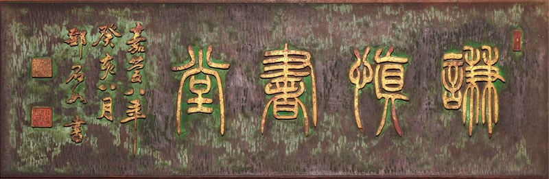
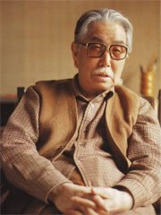
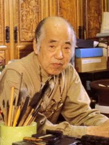
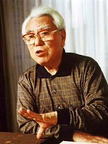

MENU
▶ HOME
▶ 謙慎書道会とは
謙慎書道会とは
組織・役員
歴史
特別座談会
▶ 七賢人
▶ 謙慎書道会展
謙慎書道会展
入賞目録
出品規程
過去の謙慎書道会展
地域別活動分会
有山社書展
静岡・神奈川展
中部展
東部展
西部展
甲信北越展
九州沖縄展
過去のイベント紹介
▶ お知らせ
▶ リンク

第89回 謙慎書道会展
開催予定
第一会場
東京都美術館
会期
2027年3月××日（××）～3月××日（××）
AM××：××～PM××：××
（入場は閉会の30分前まで。
最終日はPM××：××閉会）
入場料
××
▶ 開催概要を見る
▶ 過去の展覧会
お知らせ
新着情報
▶ バックナンバー
2026/10/11
甲信北越展の開催情報を更新しました。
2026/9/24
西部展の開催情報を更新しました。
2026/9/11
九州沖縄展の開催情報を更新しました。
2026/5/18
東部展の開催情報を更新しました。
2026/5/8
第88回展の【常任理事】昇格役員一覧を公開しました。
2026/5/8
第88回展の【理事】昇格役員一覧を公開しました。
2026/4/30
静岡・神奈川展の開催情報を更新しました。
七賢人
会の礎を築いた七人
▶ 七人すべて見る
西川寧
1902–1989

青山杉雨
1912–1993
上條信山
1907–1997

殿村藍田
1913–2000
淺見筧洞
1915–2006

成瀬映山
1920–2007
小林斗盦
1916–2007
公募・出品をお考えの方へ
出品規定・出品申込の手順をご案内しています。
▶ 出品規定を見る
◀ 前へ
閉じる
次へ ▶